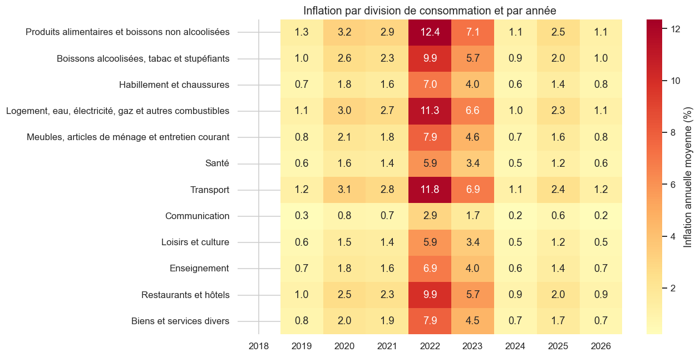
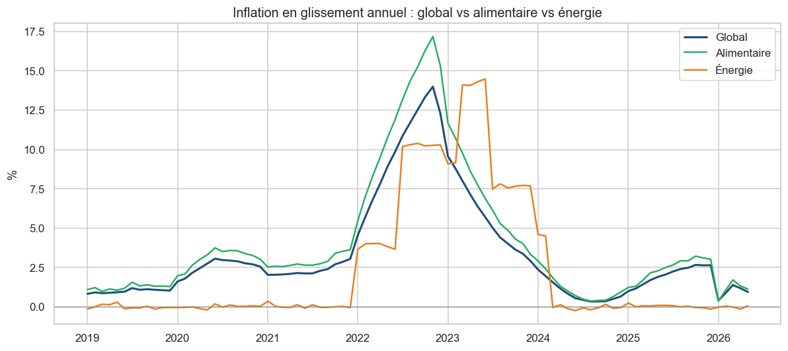
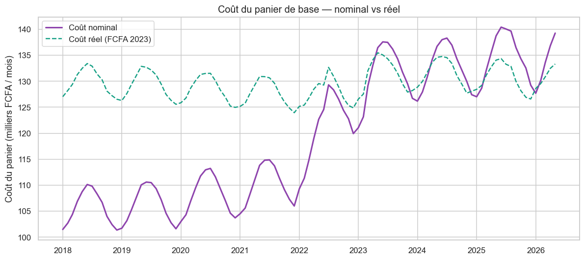
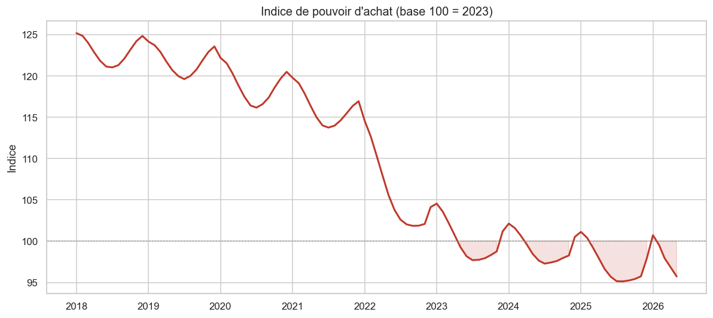
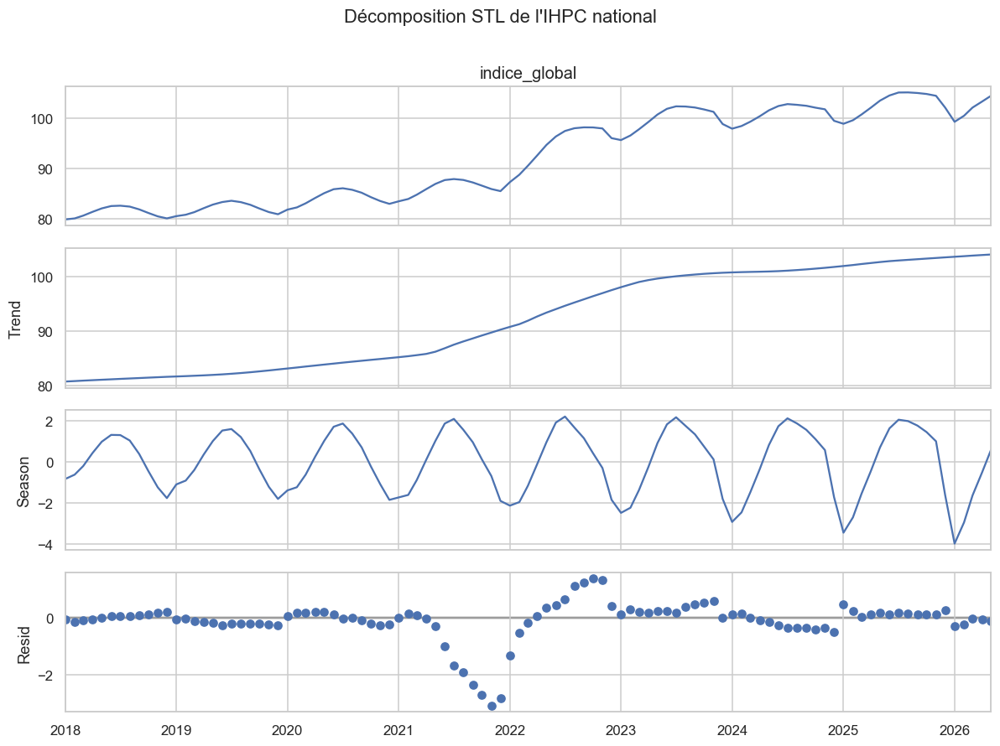
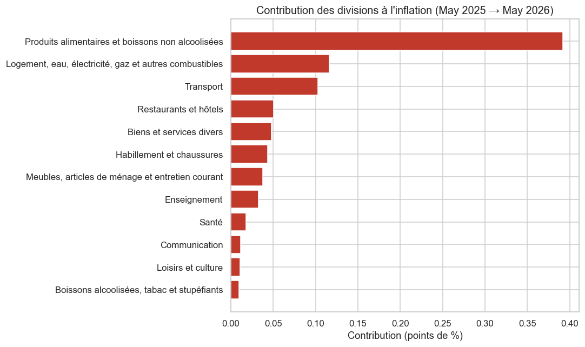

Projet Business Intelligence de bout en bout (2018–2026) : du nettoyage des données à la prévision, en passant par l'analyse SQL, le data storytelling et le tableau de bord.
Indicateurs calculés sur la période 2018–2026.
Graphiques générés à partir des données traitées du projet.
Inflation globale vs alimentaire vs énergie — pic de +14 % en novembre 2022.
Hausse cumulée des prix 2018 → 2026 (%).
Historique + prévision SARIMA (base 100 = 2023).
Les indicateurs des 6 zones de collecte de l'IHPC projetés sur les 14 régions administratives (GeoJSON officiel).
Extraits de l'analyse exploratoire (notebook Python).






Un pipeline reproductible : python scripts/run_all.py.